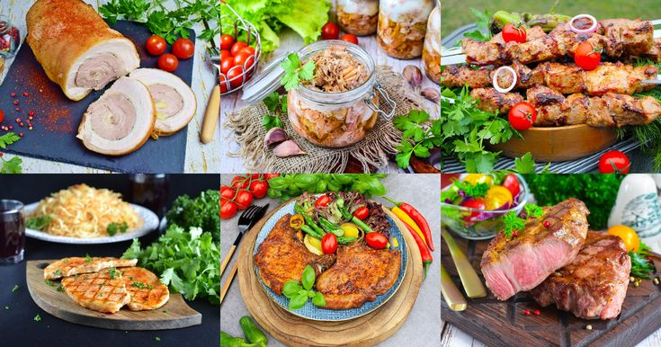

Рецепты с использованием свинины

Различные части свинины и их особенности:
- Голова
- Описание: Часто используется для приготовления холодца и заливного, а также в колбасных изделиях.
- Использование: Мясо головы содержит много соединительной ткани, что делает его идеальным для длительного приготовления. Из головы также можно делать бульоны и использовать для фарширования
- Шейка
- Описание:Мясо с хорошим содержанием жира и соединительной ткани, что делает его сочным и ароматным.
- Использование:Отлично подходит для запекания, тушения и приготовления колбас. Шейка также хорошо подходит для жарки на гриле и шашлыка.
- Корейка
- Описание:Нежное мясо, которое находится вдоль позвоночника. Имеет небольшое количество жира, что делает его менее калорийным.
- Использование:Подходит для жарки, запекания и приготовления стейков. Часто используется для приготовления карбонада.
- Карбонад
- Описание:Это часть корейки, которая содержит более выраженный слой жира.
- Использование:Идеален для жарки и запекания, а также для приготовления отбивных. Карбонад можно мариновать и готовить на гриле.
- Окорок
- Описание:Задняя часть свинины, с большим количеством мяса и меньшим содержанием жира.
- Использование:Используется для запекания, приготовления ветчины и других мясных изделий. Окорок также подходит для тушения и приготовления блюд в горшочках.
- Вырезка
- Описание:Самая нежная часть свинины, практически без жира и соединительной ткани.
- Использование:Идеально подходит для быстрого приготовления, жарки и запекания. Используется для стейков и мясных рулетов.
- Рулька
- Описание:Мясо с костями и большим количеством соединительной ткани, что делает его очень вкусным при длительном приготовлении.
- Использование:Чаще всего используется для запекания или тушения. Рулька хорошо подходит для приготовления пива или кваса с мясом.
- Ножки
- Описание:Мясо на передних или задних лапках свиньи. Содержит много соединительной ткани и жира.
- Использование:Используется для приготовления холодца, супов и бульонов. Ножки можно также запекать или тушить.
- Грудинка
- Описание:Мясо с высоким содержанием жира, имеет слои мяса и жира, что делает его очень сочным.
- Использование:Грудинка идеально подходит для запекания, копчения и жарки. Часто используется для приготовления бекона.
- Рёбрышки
- Описание:Мясо с костями, с хорошим содержанием жира. Существует несколько видов ребер: короткие и длинные.
- Использование:Отлично подходит для барбекю, запекания и приготовления на гриле. Ребрышки можно тушить с соусами для получения нежного и ароматного блюда.
- Лопатка
- Описание:Мясо с хорошим содержанием жира и соединительной ткани, которое делает его более жестким, но очень ароматным.
- Использование:Лучше всего подходит для тушения, запекания и приготовления фарша. Лопатка также используется для приготовления колбас и мясных рулетов.

Топ 5 самых популярных блюд из свинины:
- Шашлык из свинины
- Свинина по-строгановски
- Запеченный окорок
- Карбонад
- Ребрышки барбекю
Ссылки на источники:
А также: